컴퓨터활용능력-1급 (2005-02-20 기출문제)
1과목: 컴퓨터 일반
1. 다음 중 특정한 파일이나 폴더를 마우스 오른쪽 단추를 누른 채로 끌어다가 다른 폴더에 놓았을 때 나타나는 바로 가기 메뉴가 아닌 것은?
- 여기에 복사
- 여기로 이동
- 휴지통으로 바로 가기
- 여기에 바로 가기 만들기
(정답률: 84%)

2. FTP를 이용하여 동영상 파일을 전송하고자 할 때 알맞는 전송 모드는?
- Binary 모드
- ASCII 모드
- Multi 모드
- Comm 모드
(정답률: 73%)
3. 컴파일러나 어셈블러 등에 의해 기계어로 번역된 상태의 프로그램을 무엇이라 하는가?
- 목적프로그램
- 로드모듈
- 실행프로그램
- 번역프로그램
(정답률: 60%)
4. 한글 Windows에서 새로운 하드웨어를 추가할 경우 꼭 필요한 것이 아닌것은?
- 새로 추가할 하드웨어 드라이버
- 하드웨어가 올바르게 설치 되었는지 확인
- 바이러스 백신 프로그램
- 하드웨어가 PnP를 지원하는지 확인
(정답률: 80%)
5. 네트워크를 구성하는 각 노드를 통신선으로 연결하는데 사용되는 장비로 배선의 간소화, 이동의 편리함과 더불어 LAN에 있어서 통합회선 관리를 목적으로 하는 장비의 이름은?
- 라우터
- 허브
- 브리지
- 리피터
(정답률: 64%)
6. 다음 모니터에 대한 다음 설명 중 가장 옳지 못한 것은?
- 해상도가 좋을수록 모니터에 나타나는 영상은 선명하다.
- PDP, 액정, CRT등 여러가지 방식이 사용된다.
- 출력 장치의 하나로 문자나 그림을 화면에 영상으로 표시해 주는 장치이다.
- 그래픽 모니터에 나타나는 작은 점으로 영상을 표현 하는 최소 단위를 도트(Dot)라고 한다.
(정답률: 83%)
7. 미국 국방부 산하의 국가 보안 기관(NSA; National Security Agency)의 하부 조직 중 하나인 미국 국립 컴퓨터 보안 센터에서 규정하고 있는 보안 등급 중 설명이 옳지 못한 것은?
- D 등급 : 시스템 전반의 운영에 대한 보안이 거의 고려되어 있지 않은 시스템
- B1 등급 : 모든 데이터가 체계적인 보안 등급을 가지는 시스템
- A 등급 : 시스템의 안전을 물리학적으로 증명할 수 있는 시스템
- C1 등급 : 유닉스와 같이 사용자 단위의 접근 제한, 그룹별 관리가 가능한 시스템
(정답률: 55%)
8. Windows 운영체제에서 모든 구성 데이터의 중앙 저장소라고 할 수 있는 레지스트리에 관한 설명 중 거리가 먼 것은 무엇인가?
- 레지스트리는 윈도우가 작동하는데 필요한 수많은 정보들을 저장하고 있다.
- 윈도우의 시스템 구성, 하드웨어 구성, Win32 기반 응용 프로그램에 대한 구성 정보, 사용자 정보 등이 모두 이 레지스트리에 기록된다.
- 컴퓨터에 설치된 모든 하드웨어와 소프트웨어의 실행 정보를 한군데 모아 관리하는 단층적인 데이터베이스이다.
- 레지스트리 파일은 사용자와 관련된 정보를 담고 있는 파일과 하드웨어나 컴퓨터와 관련된 초기화 설정 파일로 구성되어 있다.
(정답률: 69%)
9. 인터넷에서 방화벽을 사용하는 이유로 틀린 것은?
- 보안이 필요한 네트워크의 통로를 단일화하여 관리함으로써 외부의 불법 침입으로부터 내부 정보 자산을 보호하기 위해 사용한다.
- 역추적 기능이 있어서 외부의 침입자를 역추적하여 흔적을 찾을 수 있다.
- 방화벽 시스템을 이용하면 보안에 완벽하며, 특히 내부로부터의 불법적인 해킹도 막을 수 있다.
- 외부에서 내부 네트워크로 들어오는 패킷은 내용을 엄밀히 체크하여 인증된 패킷만 통과시키는 구조이다.
(정답률: 78%)
10. 다음 중 운영체제를 모두 모은 것은?
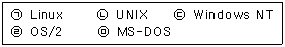
- (ㄱ) , (ㄴ)
- (ㄱ) , (ㄴ) , (ㄷ)
- (ㄱ) , (ㄴ) , (ㄷ) , (ㄹ)
- (ㄱ) , (ㄴ) , (ㄷ) , (ㄹ) , (ㅁ)
(정답률: 71%)
11. 한글 Windows에서 현재 활성화된 윈도우 탐색기 창을 닫기 위한 방법이 아닌 것은?
- [종료] 메뉴에서 닫기 선택
- Alt 키와 F4 키를 함께 누른다.
- Alt 키와 Sapce Bar 키를 함께 누른 다음 창 제어 메뉴에서 <닫기>를 선택한다.
- 창의 제목 표시줄 좌측의 창 제어 아이콘을 더블 클릭한다.
(정답률: 49%)
12. 다음 중 FTP 명령어중 한 개의 파일을 다운로드 받을 때 사용하는 명령어는?
- mget
- get
- put
- send
(정답률: 78%)
13. 인터넷 P2P 음악 서비스에서 주로 사용되는 파일 형식은?
- AVI 파일
- MPEG 파일
- MIDI 파일
- MP3 파일
(정답률: 84%)
14. 시스템 구성 편집기(Sysedit)로 편집할 수 없는 파일은 다음 중 어느 것인가?
- admin.dll
- config.sys
- win.ini
- autoexec.bat
(정답률: 73%)
15. 다음 중 한글 Windows의 네트워크 구성 요소 중에서 다른 Microsoft Windows 시스템과 서버에 연결할 수 있고, 파일과 프린터를 공유할 수 있게 하는 요소로 가장 적절한 것은?
- TCP/IP
- Microsoft 네트워크 클라이언트
- 네트워크 어댑터
- NetBEUI
(정답률: 58%)
16. 다음 중 파일과 파일 시스템에 관한 기본 설명 중에서 옳지 않은 것은?
- 파일이 기록될 때는 실제 데이터 영역에는 클러스터 단위로 파일이 기록되고, 그 클러스터의 위치가 FAT 영역에 기록된다. 그러므로 클러스터의 크기가 늘어나면 그만큼 기록되는 클러스터의 위치가 늘어나게 되어 검색 속도가 빨라지게 된다.
- 데이터를 저장할 때 하드디스크에서는 이 데이터들을 섹터라는 최소 단위로 기록한다. 그러나 운영체제는 이 데이터들을 섹터 단위가 아닌 파일 단위로 저장한다.
- 파일은 그 내용 여부에 따라 크기가 다르기 때문에 파일을 구성하는 섹터의 크기도 달라진다. 이러한 파일과 섹터의 저장 방법 및 파일 관리를 하는 것을 파일 시스템이라고 부른다.
- 일반적으로 FAT를 파일 시스템이라 하는데, 이것은 운영체제가 파일을 관리하는 방법을 말하는 것이다.
(정답률: 63%)
17. 다음 중 운영체제에 대한 설명으로 옳지 않은 것은?
- 초기 컴퓨터 시스템에는 운영체제가 없었다.
- 운영체제의 종류로는 매크로 프로세서, 어셈블러, 컴파일러 등이 있다.
- 운영체제란 하드웨어를 사용 가능하도록 소프트웨어나 펌웨어(Firmware)로 구현된 프로그램이다.
- 운영체제의 주된 역할은 프로세서, 기억장치, 입출력 장치, 통신장치, 데이터 등과 같은 자원의 관리이다.
(정답률: 61%)
18. 네트워크를 통해 전송되는 멀티미디어 데이터 파일의 용량이 크기 때문에 생겨난 기술로, 사용자가 전체 파일을 다운 받을 때까지 기다릴 필요없이 전송 되는대로 재생시키는 기술을 무엇이라고 하는가?
- MPEG 기술
- 디더링(Dithering) 기술
- VOD(Video On Demand) 기술
- 스트리밍(Streaming) 기술
(정답률: 87%)
19. 다음 컴퓨터 하드웨어에 대한 다음 설명 중 가장 옳지 않은 것은?
- 컴퓨터는 전류가 흐르는 상태(ON)와 흐르지 않는 상태(OFF)가 반복되어 작동하는데, ON/OFF의 전류 흐름에 의해 CPU는 작동한다. 이 전류의 흐름을 클럭 주파수(Clock Frequency)라 하고, 줄여서 클럭(Clock) 이라고 한다.
- 클럭의 단위는 MHz를 사용하는데 1MHz는 1,000,000Hz를 의미하며, 1Hz는 1초 동안 1,000 번의 주기가 반복되는 것을 의미한다.
- CPU가 기본적으로 클럭 주기에 따라 명령을 수행한다고 할 때, 이 클럭값이 높을 수록 CPU는 빠르게 일을 하고 있는 것으로 볼 수 있다.
- 클럭 주파수를 높이기 위해 메인보드로 공급되는 클럭을 CPU 내부에서 두 배로 증가시켜 사용하는 클럭 더블링(Clock Dubling)이란 기술이 486 이후부터 사용되었다.
(정답률: 83%)
20. 하드웨어가 제대로 작동하지 않을 경우 체크해야 하는 항목으로 가장 거리가 먼 것은?
- 같은 장치가 여러번 설치되었는지 확인한다.
- 설치된 장치에 적합한 드라이버가 설치되었는지 확인한다.
- 서로 다른 장치가 같은 IRQ를 사용하는지 확인한다.
- Format하고 운영체제를 다시 설치한다.
(정답률: 83%)
2과목: 스프레드시트 일반
21. [A1] 셀에 =SUMPRODUCT({1, 2, 3}, {5, 6, 7})을 입력하고 Enter 키를 눌렀을 때 수식의 결과 값으로 옳은 것은?
- 24
- #VALUE!
- 32
- 38
(정답률: 76%)
22. 현재 작업하고 있는 통합 문서의 ‘Sheet1’ 시트에서 ‘Sheet3’ 시트까지 [Al] 셀의 합을 구하고자 한다. 잘못된 참조 방법은?
- =SUM(Sheet1:Sheet3!A1)
- =SUM(Sheet1!A1:Sheet3!A1)
- =SUM(Sheet1!A1,Sheet2!A1,Sheet3!A1)
- =SUM(Sheet1:Sheet2!A1,Sheet3!A1)
(정답률: 60%)
23. 다음 중 차트의 페이지 설정에 관한 설명 중 옳지 않은 것은?
- 차트를 선택한 상태에서 페이지 설정을 선택하면 페이지 설정 대화 상자에서 <시트> 탭 대신 <차트> 탭이 나타난다.
- 전체 페이지 사용을 선택하면 여백을 포함한 페이지 크기에 맞게 차트를 확대하여 출력할 수 있다. 차트 너비와 높이는 비례적으로 확대된다.
- 사용자 정의를 선택하면 지정한 크기에 맞게 화면에서 차트 시트의 크기를 조정할 수 있다.
- 시험 출력을 선택하면 그림과 셀 눈금선을 인쇄하지 않도록 하여 인쇄 시간을 단축한다.
(정답률: 48%)
24. 엑셀에서 데이터를 정렬하려는데 다음과 같은 정렬 경고 대화 상자가 표시되었다. 아래 설명 중 올바르지 않은 것은?
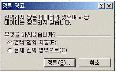
- 이 [정렬 경고] 대화 상자는 표 범위에서 하나의 열만 범위로 선택한 경우에 발생한다.
- 인접한 데이터를 포함하기 위해 선택 영역을 늘리려면 ‘선택 영역 확장’을 선택한다.
- 이 [정렬 경고] 대화 상자는 셀 포인터가 표 범위 내에 있지 않기 때문에 발생한다.
- ‘현재 선택 영역으로’를 선택하면 현재 설정한 열만을 정렬 대상으로 선택한다.
(정답률: 64%)
25. [보기]-[도구 모음]에 있는 [외부데이터]의 바로 가기(단축) 아이콘 중 다음 아이콘의 기능은 어느 것인가?
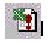
- 외부 데이터 입력
- 모두 새로 고침
- 상태 새로 고침
- 데이터 새로 고침
(정답률: 44%)
26. 다음의 그림과 같이 [B2]셀에 표시된 2134 숫자의 오른쪽에 ‘원’을 표시하고 ‘원’ 다음에 하나의 여백을 주려면 사용자 서식을 어떻게 지정해야 하는가?
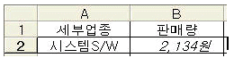
- #,##0“원”_
- #,##0“원”_-
- #,##0“원”-
- #,##0“원” -
(정답률: 68%)
27. 다음 중에서 주어진 조건과 일치하는 셀의 합을 구하는 함수는?
- ROUND
- SUMIF
- OFFSET
- VLOOKUP
(정답률: 83%)
28. 다음과 같이 [A1] 셀이 표시되었을 때, [A1] 셀의 가로 텍스트 맞춤의 설정 옵션으로 옳은 것은?
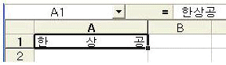
- 양쪽 맞춤
- 채우기
- 균등 분할
- 선택 영역의 가운데로
(정답률: 73%)
29. 다음과 같이 Sheet1의 [A1:C10] 영역에 70을 입력한 후 글꼴 스타일을 굵게, 글꼴 색을 빨강으로 설정하는 프로시저를 완성하기 위해 밑줄(__) 부분에 입력할 내용을 순서대로 옳게 나열한 것은?
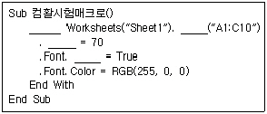
- Sub, Cell, Range, Bold
- Sub, Cell, Value, Bold
- With, Cell, Value, Bold
- With, Range, Value, Bold
(정답률: 60%)
30. 다음 워크시트에서 지급액[B2:B5]을 현재의 값에 ‘추가지급분[D2]’를 더한 값으로 변경하고자 할 때 필요한 기능을 순서대로 올바르게 나열한 것은?
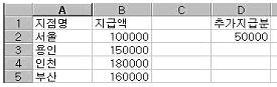
- [편집]-[복사], [편집]-[선택하여 붙여넣기]
- [편집]-[복사], [편집]-[붙여넣기]
- [편집]-[잘라내기], [편집]-[붙여넣기]
- [편집]-[잘라내기], [편집]-[선택하여 붙여넣기]
(정답률: 76%)
31. 아래 지도 차트에서 편집이 불가능한 작업은 다음 중 어느 것인가?
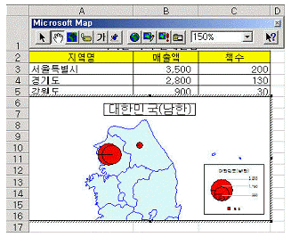
- 차트 유형 변경
- 지역이름표 추가
- 기호 변경 및 이동
- 사용자 정의 표지
(정답률: 53%)
32. 매크로 이름을 변경하고 싶다. 매크로 대화 상자에서 어떤 단추를 클릭하여야 매크로 이름을 변경할 수 있나?
- 편집
- 삭제
- 옵션
- 매크로 위치
(정답률: 76%)
33. 다음 중 컨트롤의 주요 이벤트가 아닌 것은?
- Click
- Change
- Copy
- Enter, Exit
(정답률: 54%)
34. 다음은 한자와 특수문자 입력에 대한 설명으로 잘못된 것은?
- 한글 자음(ㄱ, ㄴ, ..., ㅎ) 중 하나를 입력한 후 [한자] 키를 누르면 화면 하단에 특수문자 목록이 표시된다.
- ‘국’과 같이 한글 한 글자를 입력한 후 [한자] 키를 누르면 화면 하단에 해당 한글에 대한 한자 목록이 표시된다.
- 한글 쌍자음 ‘ㄸ’을 입력한 후 [한자] 키를 누르면 화면 하단에 어떤 목록도 표시되지 않는다.
- 각각의 한글 자음마다 화면 하단에 표시되는 특수문자가 다르다.
(정답률: 83%)
35. 다음 [목표값 찾기] 기능을 실행해서 해결하고자 하는 내용을 올바르게 설명한 것은?
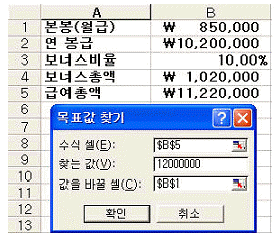
- 급여총액이 12,000,000원이면 월급이 얼마나 될까?
- 월급이 850,000원이면 급여총액이 얼마나 될까?
- 보너스가 850,000원이면 급여총액이 얼마나 될까?
- 급여총액이 12,000,000원이면 보너스가 얼마나 될까?
(정답률: 84%)
36. 다음 중 매크로 작성시 매크로 이름 지정에 대한 설명으로 올바른 것은?
- 매크로 이름의 첫 글자는 숫자여야만 한다.
- 서로 다른 매크로라도 하나의 통합 문서에서는 동일한 이름을 부여할 수 있다.
- 매크로 이름에는 +, -, &, *, ? 등의 특수문자는 포함될 수 없지만, 공백은 포함할 수 있다.
- 매크로 이름은 문자로 시작하며 첫 글자를 제외하고는 문자, 숫자 등을 혼합하여 작성할 수 있다.
(정답률: 71%)
37. 데이터베이스에서 ‘판매수량’의 평균보다 ‘판매수량’이 많은 자료를 필터링하기 위한 고급 필터의 조건으로 옳은 것은?
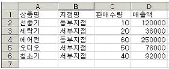
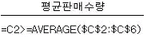
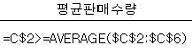
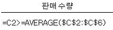
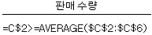
(정답률: 56%)
38. 다음 중 배열 상수의 설명으로 틀린 것은?
- 같은 배열 상수에 다른 종류의 값을 사용할 수 있다.
- 배열 상수로 숫자, 텍스트, TRUE나 FALSE와 같은 논리값, #N/A와 같은 오류값 등을 사용할 수 있다.
- {1,2,TRUE;3,4,FALSE}와 같이 상수를 배열로 지정한 것을 배열 상수라 한다.
- 배열 상수에 정수, 실수, 지수형 서식의 숫자를 사용할 수 없다.
(정답률: 68%)
39. 다음은 차트 기능에 대한 설명으로 올바른 것은?
- 차트로 작성할 데이터를 시트에 입력하지 않고 차트 마법사 2단계에서 직접 모든 원본 데이터를 입력 할 수도 있다.
- 혼합형 차트의 구현은 2차원, 3차원 차트 다 가능하다.
- 분산형 차트, 피라미드형 차트, 주식형 차트는 3차원 차트로 작성할 수 없다.
- 범례의 경우 지정할 수 있는 위치에는 아래쪽, 모서리, 위쪽, 오른쪽, 왼쪽이 있는데 이중에서 모서리를 설정하면 차트의 오른쪽 아래 모서리에 범례가 표시된다.
(정답률: 55%)
40. 다음은 [데이터]-[부분합]에 대한 설명으로 옳지 않은 것은?
- 입력된 자료들을 그룹별로 분류하고 해당 그룹별로 특정한 계산을 수행하는 기능이다.
- 부분합 기능을 실행하기 전에 계산하고자 하는 그룹을 기준으로 정렬되어 있어야 올바른 결과를 얻을 수 있다.
- 부분합의 삭제는 [데이터]-[부분합]을 클릭한 후, 나타나는 대화 상자에서 [모두 제거]를 선택한다.
- 특정 영역에 대해서는 부분합을 실행할 수 없으며, 워크시트 전체에 대해 실행하여야 한다.
(정답률: 76%)
3과목: 데이터베이스 일반
41. 작성된 컨트롤을 클릭한 후 Shift 키를 누른 상태에서 오른쪽 화살표 키를 눌렀을 때, 실행되는 작업은?
- 컨트롤 속성 대화 상자가 표시된다.
- 컨트롤 복사
- 컨트롤 이동
- 컨트롤 크기 조정
(정답률: 55%)
42. 경은이는 날짜 데이터 형식을 이용하여 ‘20⑤년 1월 14일 금요일’과 같이 나타내려고 한다. 이 때 경은이가 설정해야 할 날짜/시간 데이터 형식으로 알맞은 것은?
- 일반날짜
- 날짜(L)
- 날짜(M)
- 날짜(S)
(정답률: 67%)
43. 다음과 같은 직원(사원번호, 부서명, 성명, 직급) 테이블에서 부서별 인원수가 3명 이상인 부서명을 출력하는 질의문은?
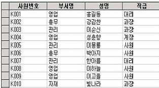
- select 부서명 from 직원 having count(*)>=3 group by 부서명
- select 부서명 from 직원 group by 부서명 having count(*)>=3
- select 부서명 from 직원 where count(*)>=3 group by 부서명
- select 부서명 from 직원 group by 부서명 where count(*)>=3
(정답률: 61%)
44. 다음 중 기본보기 속성을 통해 설정하는 폼의 종류에 대한 설명으로 가장 옳지 않은 것은?
- 단일 폼은 한번에 한 개의 레코드만을 표시한다.
- 연속 폼은 현재 창을 채울 만큼 여러 개의 레코드를 표시한다.
- 연속 폼은 매 레코드마다 폼 머리글과 폼 바닥글이 표시된다.
- 데이터시트 형식은 스프레드시트처럼 행과 열로 정렬된 폼 필드를 표시한다.
(정답률: 65%)
45. 보고서의 특정 텍스트 박스에서 <판매조회> 폼의 text오늘날짜 컨트롤의 값을 참조하고자 한다. 이 텍스트 박스의 컨트롤 원본을 어떻게 설정하면 되는가?
- = forms!판매조회_text오늘날짜
- = forms_판매조회.text오늘날짜
- = forms!판매조회!text오늘날짜
- = forms_판매조회_text오늘날짜
(정답률: 62%)
46. 액세스에서 테이블을 생성하는 방법으로 옳지 않은 것은?
- 데이터 시트 보기 이용
- 테이블 마법사 이용
- 디자인 보기 이용
- 조회 마법사 이용
(정답률: 69%)
47. 서로 알맞게 연결한 것은?
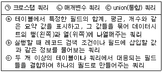
- (ㄱ) - ⓐ , (ㄴ) - ⓑ , (ㄷ) - ⓒ
- (ㄱ) - ⓑ , (ㄴ) - ⓐ , (ㄷ) - ⓒ
- (ㄱ) - ⓒ , (ㄴ) - ⓑ , (ㄷ) - ⓐ
- (ㄱ) - ⓐ , (ㄴ) - ⓒ , (ㄷ) - ⓑ
(정답률: 69%)
48. 다음 질의문에 대한 설명으로 알맞은 것은?
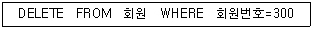
- 회원 테이블에서 회원번호가 300인 회원의 레코드를 검색한다.
- 회원 테이블에서 회원번호가 300인 필드의 값을 검색한다.
- 회원 테이블에서 회원번호가 300인 회원의 레코드를 삭제한다.
- 회원 테이블에서 회원번호가 300인 필드의 값을 삭제한다.
(정답률: 78%)
49. 아래와 같이 그룹화되어 있는 보고서에 대한 설명으로 틀린 것은?
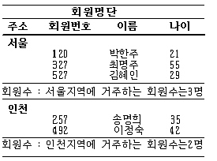
- 주소 필드로 그룹화한 보고서이다.
- 회원번호 필드는 오름차순으로 정렬되어있다.
- 그룹 바닥글 영역이 설정되어 있다.
- 그룹 머리글 영역이 설정되어 있지 않다.
(정답률: 65%)
50. 데이타베이스 설계에서 흔히 사용되는 도구 중의 하나가 데이타의 정규화이다. 데이터를 정규화하는 과정 중에서 “하나의 레코드를 삽입할 때, 기본 키의 정보가 없어서 삽입하지 못하는 경우 즉, 삽입이상”이 발생하였다면 어느 단계의 정규화에 문제가 있는가?
- 제1정규화
- 제2정규화
- 제3정규화
- 제4정규화
(정답률: 53%)
51. 인덱스를 설정할 때 단일 필드를 기본 키로 지정된 인덱스 속성을 “예(중복 불가능)”가 아닌 다른 값으로 설정하여 테이블을 저장하려 할 때, 다음 중 맞는 것은?
- 해당 필드에 설정된 기본 키를 해제해야 한다.
- 단일 필드 기본 키 다음 필드에 ID라는 필드가 자동으로 추가되어 테이블이 저장된다.
- 단일 필드 기본 키가 설정된 상태로 테이블이 저장된다.
- 단일 필드 기본 키에 가장 근접한 필드가 다중 필드 기본 키로 설정되어 테이블이 저장된다.
(정답률: 54%)
52. 폼에서 컨트롤의 [속성] 대화 상자에 나타나는 <데이터> 탭에 관한 설명으로 옳은 것은?
- 컨트롤의 원본, 배경, 테두리, 글꼴 등에 대한 속성을 설정한다.
- 컨트롤 원본, 입력 마스크, 기본값 등의 속성을 설정한다.
- 매크로나 Visual Basic 이벤트 프로시저가 실행되도록 속성을 설정한다.
- 컨트롤의 이름, 상태 표시줄 메시지, 탭 등의 속성을 설정한다.
(정답률: 54%)
53. 다음은 보고서의 그룹화 수준이 지정된 컨트롤의 속성 중 [데이터]-[누적총계]에 대한 설명이다. 가장 적절하지 않은 것은?
- 특정 필드의 값에 대한 페이지별 누적 총계를 계산하여 표시하는 속성
- 아니오(기본값)를 선택하면 레코드에서 원본으로 사용하는 필드의 값을 표시
- ‘그룹’을 선택하면 동일한 그룹내에서의 누적 총계를 표시
- ‘모두’를 선택하면 그룹에 관계없이 전체 데이터에 대한 누적 총계를 표시
(정답률: 51%)
54. Dim intX, intY, intZ AS Integer 문에서 변수 형식은 어떻게 지정되는가?
- intX, intY, intZ 모두 정수형이다.
- intX, intY는 variant형이고 intZ는 정수형이다.
- intX, intY, intZ 모두 variant형이다.
- intX, intY는 정수형이고 intZ는 배열을 의미한다.
(정답률: 52%)
55. 서로 관계를 맺고 있는 릴레이션 R1, R2 에서 릴레이션 R2에 의한 속성이나 속성의 조합이 릴레이션 R1의 기본 키인 것을 무엇이라고 하는가?
- 대체 키(Alternate Key)
- 슈퍼 키(Super Key)
- 외래 키(Foreign Key)
- 후보 키(Candidate Key)
(정답률: 70%)
56. 다음의 사원 테이블을 대상으로 “주소가 경기도인 사원을 찾아 급여를 기준으로 오름차순으로 정렬하고자 한다.”라면 질의어를 어떻게 구성해야 하는가?
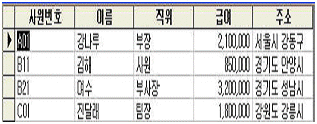
- select * from 사원 where 주소 like (“경기도*”) order by 급여 desc;
- select * from 사원 where 주소 like (“경기도*”) order by 급여 asc;
- select * from 사원 where 주소 <> ‘경기도’ order by 급여 asc;
- select * from 사원 where 주소 = ‘경기도*’ order by 급여 desc;
(정답률: 75%)
57. 보고서의 머리글 영역에 다음과 같이 현재의 날짜와 시간이 출력되게 하고 싶다. 이 경우 사용해야 할 함수를 바르게 고른 것은?
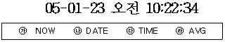
- ㉮
- ㉮ ㉯
- ㉮ ㉯ ㉰
- ㉮ ㉯ ㉰ ㉱
(정답률: 64%)
58. 다음은 데이터베이스 언어에 대한 설명이다. 옳게 연결된 것은?
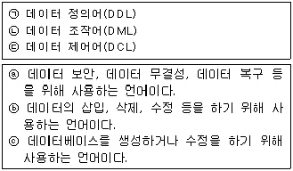
- (ㄱ) - ⓐ, (ㄴ) - ⓑ, (ㄷ) - ⓒ
- (ㄱ) - ⓑ, (ㄴ) - ⓐ, (ㄷ) - ⓒ
- (ㄱ) - ⓒ, (ㄴ) - ⓐ, (ㄷ) - ⓑ
- (ㄱ) - ⓒ, (ㄴ) - ⓑ, (ㄷ) - ⓐ
(정답률: 63%)
59. 폼 작성시 컨트롤의 주요 속성 중에서 데이터 속성에 관한 설명이다. 가장 잘못된 것은?
- 컨트롤 원본==> 컨트롤에 연결할 데이터를 지정한다.
- 입력 마스크==> 입력란 컨트롤에 입력할 값의 형식이나 서식을 설정한다.
- 사용==> 컨트롤의 데이터를 편집 할 수 있는지 여부를 지정한다.
- 기본값==> 새 레코드가 만들어질 때 컨트롤에 기본으로 입력될 값을 지정한다.
(정답률: 65%)
60. 다음 중 보고서를 구성하는 요소(구역)로 가장 거리가 먼 것은?
- 그룹 머리글
- 페이지 머리글
- 보고서 머리글
- 폼 머리글
(정답률: 75%)